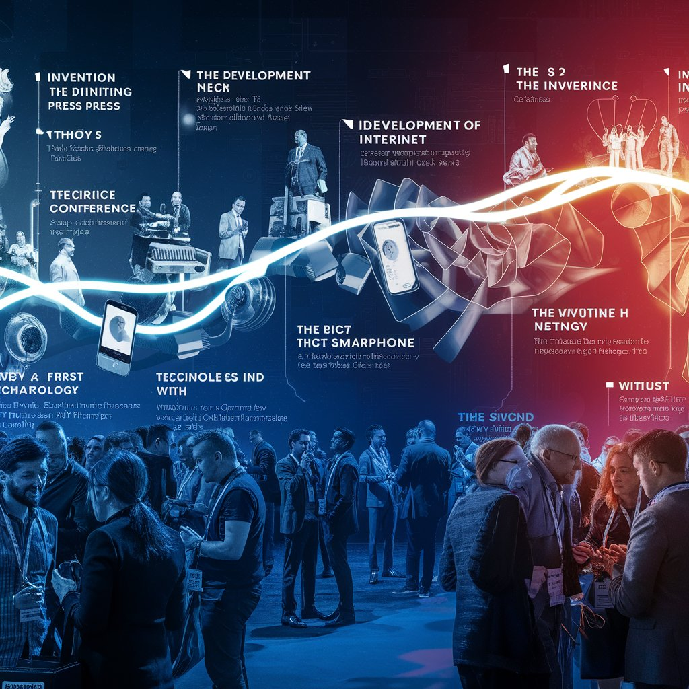
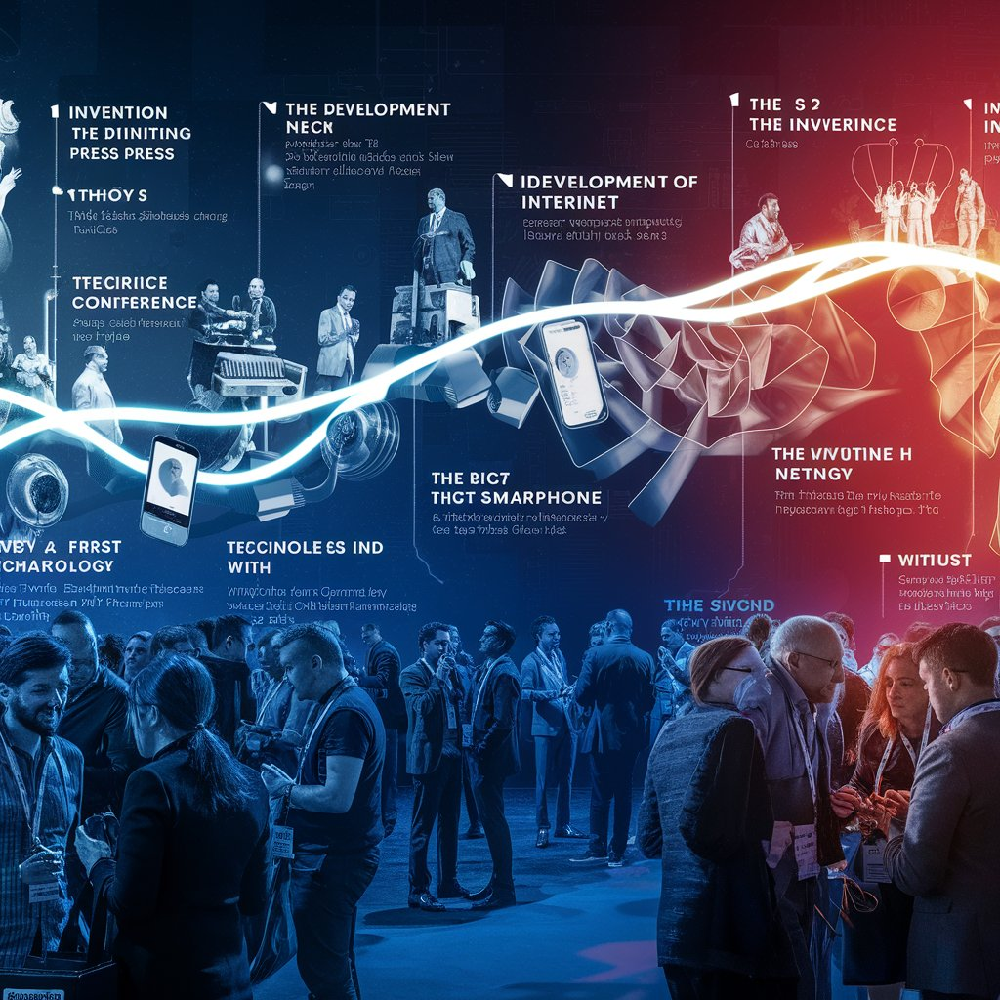

History
TechCon was founded i2014 with the vision of fostering collaboration and innovation within the tech industry. Over the years, it has grown into a global platform, attracting leading figures and aspiring minds alike.
TechCon was founded i2014 with the vision of fostering collaboration and innovation within the tech industry. Over the years, it has grown into a global platform, attracting leading figures and aspiring minds alike.
TechCon's mission is to empower tech enthusiasts and professionals by providing a platform for knowledge sharing, networking, and shaping the future of technology.
A pioneering figure in the field of Artificial Intelligence. Dr. Wang is well-known for her groundbreaking work on developing self-learning algorithms for natural language processing. Her keynote address at TechCon 2023 focused on the potential of AI to revolutionize human-computer interaction.
A leading developer and entrepreneur in the tech industry. Ms. Khan is the CEO of GreenTech Solutions, a company at the forefront of sustainable energy solutions. Her talk at TechCon 2024 explored the future of renewable energy and its impact on combating climate change.